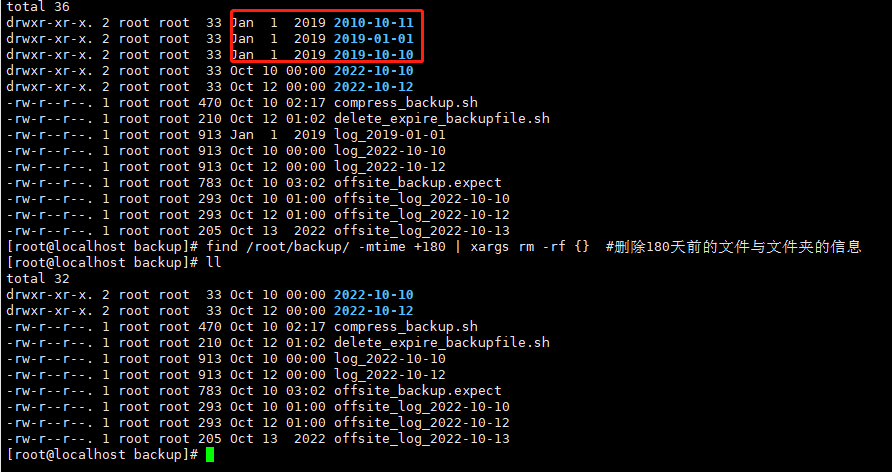

一.背景
二.依赖功能介绍 1.expect
一、expect安装介绍 1.expect命令安装： 2.expect命令含义：
expect是一种脚本语言，它能够代替人工实现与终端的交互，主要应用于执行命令和程序时，系统以交互形式要求输入指定字符串，实现交互通信。
3.expect使用场景：
（1）并根据预定标准回答其问题，回答“是”、“否”或将控制权交还给您
（2）远程连接设备并执行自动化操作
（3）主要是一些需要人机交互的地方，如果提前知道应该输入什么指令都可以使用expect 工具
二、expect使用原理
1.原理介绍：
spawn启动指定进程—expect获取指定关键字—send向指定程序发送指定字符—执行完成退出
2、spawn命令介绍：
spawm命令就是用来启动新的进程的。spawn后的send和expect命令都是和spawn打开的进程进行交互的、
3、send命令介绍：
send命令接收一个字符串参数，并将该参数发送到进程，这个过程类似模拟人类输入密码
4、interact命令介绍：
结合spawn、expect、send自动化的完成很多任务，interact命令可以在适当的时候进行任务的干预，比如下载完ftp文件时，仍然可以停留在ftp命令行状态，以便手动的执行后续命令
三、expect使用语法
1. expect 启用选项：
-c 执行脚本前先执行的命令，可多次使用2.expect命令参数：
spawn 交互程序开始，执行后面的命令或程序。需要进入到expect环境才可以执行，不能直接在shell环境下直接执行
四、expect使用举例
**1.expect脚本实现ssh自动登录远程服务
#!/usr/bin/expect 192.168 .37 .9 "*password:" "test20221007\r" "*#"
expect expect_demo1.sh 执行查看运行结果:
**2.expect脚本实现ssh自动登录远程服务器（通用脚本，手动输入**参数**）
1 2 3 4 5 6 7 8 9 10 11 12 13 14 if {$argc < 3 } { puts "Usage:cmd <host> <username> <password>" exit 1 set timeout -1 set host [ lindex $argv 0 ]set username [ lindex $argv 1 ]set password [ lindex $argv 2 ]$username @$host "*password*" {send "$password\r" }
1 ./expect_demo2.sh 192.168.37.9 mrswhite test20221007
执行查看运行结果:
3.在shell 中嵌套expect
通过expect嵌套shell使用语句在shell内直接执行，任何这样可以实现更多的功能
1 2 3 4 5 6 7 8 9 10 11 12 13 14 15 16 17 18 19 20 #!/bin/bash"mrswhite" "192.168.37.9" "test20221007" expect << EOFset time 20 user@ $hostexpect {"*yes/no" { send "yes\r" ; exp_continue }"*password:" { send "$password \r" }expect "*#" "pwd\r" expect "*#" "df -h\r" expect "*#" "exit\r" expect eof
五、expect相关错误处理
1.invalid command name “/usr/bin/expect”
解决方案：此时是使用bash脚本嵌套了expect代码，所以执行采用以下两种方式都可以
1 2 ./expect_demo3 .shsh expect_demo3 .sh
2.invalid command name “:” 转义问题
解决方案：send里面的内容中的括号[]有问题，不能使用[],将其去除或者添加转义字符
1 2 3 send "cat 20221007.txt | awk -F : '{print $2}'" send "cat 20221007.txt | awk -F \[:\] '{print $2}'\r"
2.cron
一.cron介绍 1. var/spool/cron/
目录下存放的是每个用户包括root的crontab任务，每个任务以创建者的名字命名2. _/etc/crontab
这个文件负责调度各种管理和维护任务。3. /etc/cron.d/
这个目录用来存放任何要执行的crontab文件或脚本。
二.crontab的使用
1 2 3 4 crontab [-u username] 1 . -e (编辑工作表)2 . -l (列出工作表里的命令)3 . -r (删除工作作)
我们用crontab -e进入当前用户的工作表编辑，是常见的vim界面。每行是一条命令。
1 2 3 4 5 crontab的命令构成为 时间+动作，其时间有分、时、日、月、周五种，操作符有* 取值范围内的所有数字- 从X到Z
三.常见定时任务设置
实例2：每小时的第3和第15分钟执行
实例3：在上午8点到11点的第3和第15分钟执行
1 3 ,15 8 -11 * * * myCommand
实例4：每隔两天的上午8点到11点的第3和第15分钟执行
1 3 ,15 8 -11 */2 * * myCommand
实例5：每周一上午8点到11点的第3和第15分钟执行
1 3 ,15 8 -11 * * 1 myCommand
实例6：每晚的21:30重启smb
1 30 21 * * * /etc/init.d/smb restart
实例7：每月1、10、22日的4 : 45重启smb
1 45 4 1 ,10 ,22 * * /etc/init.d/smb restart
实例8：每周六、周日的1 : 10重启smb
1 10 1 * * 6 ,0 /etc/init.d/smb restart
实例9：每天18 : 00至23 : 00之间每隔30分钟重启smb
1 0 ,30 18 -23 * * * /etc/init.d/smb restart
实例10：每星期六的晚上11 : 00 pm重启smb
1 0 23 * * 6 /etc/init.d/smb restart
实例11：每一小时重启smb
1 0 */1 * * * /etc/init.d/smb restart
实例12：晚上11点到早上7点之间，每隔一小时重启smb
1 0 23 -7 /1 * * * /etc/init.d/smb restart
四.实例操作
1.文件实时写入:
1) 查看定时任务状态
1 2 3 4 5 6 7 [root@localhost ~]/bin/ systemctl status crond.service/usr/ lib/systemd/ system/crond.service; enabled; vendor preset: enabled) 2021 -09 -20 01 :22 :18 CST; 24 s ago Main PID: 17516 (crond) /system.slice/ crond.service 17516 /usr/ sbin/crond -n
2) 关闭/开启定时任务
1 2 3 4 5 [root@localhost ~]# service crond stop to /bin/systemctl stop crond.service@localhost ~]# service crond start to /bin/systemctl start crond.service
3) 编辑定时任务
1 2 3 [ root@ localhost ~ ] * * * * * echo `date '+\%Y-\%m-\%d \%H:\%M:\%S'` > > 123. txt
4) 查看已存在的定时任务
1 2 3 [ root@ localhost ~ ] * * * * * echo `date '+\%Y-\%m-\%d \%H:\%M:\%S'` > > 123. txt
5) 验证校验生成
1 2 3 4 5 [root@localhost ~]# cat 123.txt -09 -20 01:13:01-09 -20 01:14:01-09 -20 01:15:01
2. 定期清理对应目录下的文件
*1) 预制数据:
1 [root@localhost test20210920 ]# echo abcdefg | tee -a file{1 ..5 }.logabcdefg[root@localhost test20210920 ]# du -sh *4 .0 K file1. log4.0 K file2. log4.0 K file3. log4.0 K file4. log4.0 K file5. log
2) 添加定时任务
1 2 3 [root@localhost ~]type f -name '*.log' -exec cp /dev/null {} \;
3) 检查定时任务执行,1分钟左右
1 2 3 4 5 6 [root@localhost test20210920]# du -sh * 0 file1.log 0 file2.log 0 file3.log 0 file4.log 0 file5.log
4) 查看定时任务执行情况:
1 2 3 4 5 6 [root@localhost test20210920]# tail -5 /var/ log/cron20 01 :56 :33 localhost crontab[17797 ]: (root) END EDIT (root)20 01 :56 :51 localhost crontab[17802 ]: (root) BEGIN EDIT (root)20 01 :56 :54 localhost crontab[17802 ]: (root) END EDIT (root)20 01 :57 :01 localhost CROND[17809 ]: (root) CMD (find /root/ test20210920 -type f -name '*.log' -exec cp /dev/ null {} \;)20 01 :58 :01 localhost CROND[17819 ]: (root) CMD (find /root/ test20210920 -type f -name '*.log' -exec cp /dev/ null {} \;)
五.常见错误
1.errors in crontab file, can’t install
解决方式:
因为你的crontab格式错误，即没有按照规则写
查看原命令并修正:
1 2 echo `date +"%Y-% m-%d %H:% M"` >> 123 .txt
修改后正常保存:
1 2 * * * * * echo `date +"%Y-%m-%d %H:%M"` >> 123.txt
2.接以上错误:
邮件内报错:cat /var/spool/mail/root
解决方式:
crontab内%需要转义,修复定时任务正常
1 * * * * * echo `date '+\%Y-\%m-\%d \%H:\%M:\%S'` > > 123. txt
cron表达式：
一.cron
计划任务，是任务在约定的时间执行已经计划好的工作，这是表面的意思。在Linux中，我们经常用到 cron 服务器来完成这项工作。cron服务器可以根据配置文件约定的时间来执行特定的任务
二.cron表达式
Cron表达式是一个字符串，字符串以5或6个空格隔开，分为6或7个域，每一个域代表一个含义，Cron有如下两种语法格式：
Seconds Minutes Hours DayofMonth Month DayofWeek Year或
Seconds Minutes Hours DayofMonth Month DayofWeek
三.每个域的取值范围
域名 可取值 可取符号（仅列部分常用）
秒域
0~59的整数
* - , /
分域
0~59的整数
* - , /
时域
0~23的整数
* - , /
日域
1~31的整数
* - , / ? L
月域
112的整数或JANDEC
* - , /
周域
17的整数或SUNSAT
* - , / ? L #
年域
1970~2099的整数
* - , /
四.符号的意义
1 2 3 4 5 6 7 8 9 10 11 12 13 14 15 16 17 18 19 20 21 1. * 表示可以匹配该域的所有值； 例如，"0 0 13 * * ?"表示每天的13点执行一次。 2. ? 在cron表达式中必须出现且只能出现1次，用在日域或周域上，表示不确定值、不限制值； 它与* 的区别是，并不能匹配到该域上的所有值，例如指定了3月份每个周五，那么3月份的周五可能只有4个值；* ?"表示每个月6日5点钟执行而无论周几，"0 0 5 ? * 3"表示每个周三5点钟执行而无论是几号。3. - 表示匹配该域上的一个范围；* * "表示每天的9:30-15:30每小时执行一次，"0 1-5 * ? * 1"表示每周日每个小时的1-5分钟每分钟执行一次。4. , 表示枚举值；* 1,7"表示每个周六日的8点、16点、23点各执行一次。 5. / 表示起始时间和间隔时间； 例如，"0 0 3/5 * * ?"表示每天3点开始执行，每隔5个小时执行一次，即3点、8点、13点、18点、23点各执行一次， "* /5 * * * * ?"表示每隔5秒钟执行一次，"0 */1 * * * ?"表示每隔1分钟执行一次。6. # 只能用于周域上，#后面的数字表示第几周，如果不存在这个周的值，则不执行；* 5#2"表示每个月第2个周四零点执行，"15 30 6 ? * 7#5"表示每个月第5个周六6:30:15执行，如果某个月不存在第5个周六，则不执行。7. L 只能用于日域或周域，用于日域时表示当月最后一天，用于周域如果前面不加数字表示周六，加数字表示最后一个周值；* ?"表示每月最后一天的23点执行，"0 0 23 ? * L"表示每周六的23点执行，"0 0 23 ? * 3L"表示每月最后一个周二的23点执行。
五.常用表达式例子
意义 表达式
每隔5秒钟执行一次
*/5 * * * * ?
每隔1分钟执行一次
0 */1 * * * ?
每天1点执行一次
0 0 1 * * ?
每天23点55分执行一次
0 55 23 * * ？
每月最后一天23点执行一次
0 0 23 L * ？
每周六8点执行一次
0 0 8 ? * L
每月最后一个周五，每隔2小时执行一次
0 0 */2 ? * 6L
每月的第三个星期五上午10:15执行一次
0 15 10 ? * 5#3
在每天下午2点到下午2:05期间的每1分钟执行
0 0-5 14 * * ?
表示周一到周五每天上午10:15执行
0 15 10 ? * 2-6
每个月的最后一个星期五上午10:15执行
0 15 10 ? * 6L
每天上午10点，下午2点，4点执行一次
0 0 10,14,16 * * ?
朝九晚五工作时间内每半小时执行一次
0 0/30 9-17 * * ?
每个星期三中午12点执行一次
0 0 12 ? * 4
每年三月的星期三的下午2:10和2:44各执行一次
0 10,44 14 ? 3 4
每月的第三个星期五上午10:15执行一次
0 15 10 ? * 6#3
每月一日凌晨2点30执行一次
0 30 2 1 * ?
每分钟的第10秒与第20秒都会执行
10,20 * * * * ?
每月的第2个星期的周5，凌晨执行
0 0 0 ? * 6#2
六.注意事项:
1 2 3 4 5 1 . 有些子表达式能包含一些范围或列表例如：子表达式（天（星期））可以为 "MON-FRI" ，"MON，WED，FRI" ，"MON-WED,SAT" 2 . "*" 字符代表所有可能的值因此，"*" 在子表达式（月）里表示每个月的含义，"*" 在子表达式（天（星期））表示星期的每一天3 . "/" 字符用来指定数值的增量 例如：在子表达式（分钟）里的"0/15" 表示从第0 分钟开始，每15 分钟 在子表达式（分钟）里的"3/20" 表示从第3 分钟开始，每20 分钟（它和"3，23，43" ）的含义一样4 . "?" 字符仅被用于天（月）和天（星期）两个子表达式，表示不指定值 当2 个子表达式其中之一被指定了值以后，为了避免冲突，需要将另一个子表达式的值设为"?" 5 . "L" 字符仅被用于天（月）和天（星期）两个子表达式，它是单词"last" 的缩写 但是它在两个子表达式里的含义是不同的。 在天（月）子表达式中，"L" 表示一个月的最后一天 在天（星期）自表达式中，"L" 表示一个星期的最后一天，也就是SAT如果在"L" 前有具体的内容，它就具有其他的含义了例如："6L" 表示这个月的倒数第６天，"FRIL" 表示这个月的最一个星期五 注意：在使用"L" 参数时，不要指定列表或范围，因为这会导致问题
3.liunx的三个时间atime,mtime,ctime
一、文件与文件夹三个时间：atime,mtime,ctime的含义 1.含义
1 2 3 atime（Access Time ）：文件最近被访问时间Time ）：文件最近内容修改时间Time ）：文件最近权限和属性修改时间
2.文件的触发time修改的情况
1 2 3 atime（Access Time ）：在读取文件或者执行文件时更改的任何对inode的访问都会使此处改变Time ）：在写入文件时随文件内容的更改而更改的Time ）：在写入文件、更改所有者、权限或链接设置（更改状态）时随 Inode 的内容更改而更改的
3.文件夹触发time修改的情况
1 2 3 atime（Access Time ）：读取文件或者执行文件时更改的（cd不会ls会改变）Time ）：在文件夹中有文件的新建才会改变，注意使用vi在文件夹内新建文件即使退出时也会变mtime，而只更改文件夹内文件内容不会修改文件夹的mtimeTime ）：ctime 基本同文件的ctime，其体现的是inode的change time
4.注意事项，mtime与ctime
1 mtime的改变必然导致ctime的改变，但是ctime不一定导致mtime的更改
二、stat命令查看文件的时间
三、ll命令查看文件时间（对照stat命令可验证）
1.默认显示mtime
2.展示ctime
1 ll --time=ctime test001 .txt
3.展示atime
1 ll --time=atime test001 .txt
四、测试创建/修改文件的时间
假定目前的时间是：2022-10-05 13:15:40
1 2 date "+%Y-%m-%d %H:%M:%S"
1.创建文件后测试，文件atime、ctime、mtime均一样
1 touch test001.txtstat test001.txt
2.修改文件后查看，文件atime不变，ctime、mtime更新
1 2 echo 123 > test001.txtstat test001.txt
3.更改文件属主后:文件atime、mtime不变，ctime更新
1 2 chown -R root:root test001.txtstat test001.txt
4.创建文件夹，文件atime、ctime、mtime均一样
1 mkdir test001mdrstat test001mdr
5.文件夹内新建文件，文件夹atime不变，ctime与mtime均发生改变
1 2 vi test001mdr/test001.txtstat test001mdr
6.修改文件夹的属主，文件夹的atime、mtime不变，ctime更新
1 2 chown -R root:root ./test001mdrstat test001mdr
五、常用命令关于文件时间相关(24h为一天前时间节点，0为当前时间)
1.在当前目录下查询3天内修改过的文件（72h~0）
1 find . -mtime -3 #查询3 天内修改过的文件
2.在当前目录下查询1天内访问过的文件（24h~0）
1 find . -atime -1 #查询1 天内访问过的文件
3.查找50-100 天修改过的文件（100d~50d）
1 find / -mtime +50 -mtime -100 #查找50 -100 天修改过的文件
4.查找过去 1 小时内更改过的文件（60min~0）
1 find . -mmin -60 #过去1 小时内更改过的文件
5.查找前一天修改过的文件（48h~24h）
1 find . -mtime 1 #查找前一天修改过的文件（48 h~24 h）
6.查找一天前修改过的文件（~48h）
1 find . -mtime +1 #查找一天前修改过的文件（~48 h）
7.查找早于指定日期修改的文件（~=day）
1 find . -newermt 2022 -10 -04 #查找早于指定日期（包含）修改的文件
8.查找24小时内修改的文件（24h~0）
1 find . -new ermt '-24hours' #查找24小时内修改的文件
9.查找10分钟之内修改过的文件（10min~0）
1 find /home/ -type f -newermt '-10 minutes'
10.查找1天之内修改过的文件（24h~0）
1 find . -new ermt '1 day ago' #查找1天之前到现在修改的文件
11.查找昨天到现在修改的文件-同上（24h~0）
1 find . -new ermt 'yesterday' #查找昨天到现在修改的文件
三.本地备份脚本 1.本地备份命令测试
1 2 mkdir -p /root/ backup/`date "+%Y-%m-%d" `/root/ backup/`date "+%Y-%m-%d"`/ test20221009.tar.gz /root/ test2022100
2.封装shell脚本:compress_backup.sh
1 2 3 4 5 6 7 8 9 10 11 12 13 14 date "+%Y-%m-%d" `echo $source_folder |awk -F "/" '{print $3}' `.tar.gzecho "source_folder：$source_folder " echo "backup_folder: $backup_folder " echo "source_folder_name: $source_folder_name " mkdir -p /root/backup/`date "+%Y-%m-%d" `$backup_folder /$source_folder_name $source_folder echo "$source_folder_name 文件备份成功"
3.加入crond定时任务并将输出与错误重定向至文件
编辑添加crond定时任务列表
设置每天00:00执行一次备份任务，并将标准输出与标准错误重定向至日志文件
1 0 0 * * * sh /root/backup/compress_backup.sh 2 >&1 > /root/backup
1 /log_$(date +\%Y-\%m-\%d)
测试查看任务执行情况：
查看备份文件与本地日志正确生成
四.异地备份脚本
1.异地备份命令测试：
1 2 scp -C -r /root/ backup/2022-10-10/ mrswhite@192.168 .37.9 :/root/ back_up_offsite
提示输入密码后进行备份
查看对端文件备份成功
2.封装expect脚本offsite_backup.expect，当提示输入密码时可自动对应输入密码
1 2 3 4 5 6 7 8 9 10 11 12 13 14 15 16 17 18 19 20 21 22 23 24 25 26 set date [ clock format [ clock seconds ] -format "%Y-%m-%d" ]set username mrswhiteset host 192.168.37.9set password test20221012set source_folder /root/backupset backup_folder /root/back_up_offsiteset timeout -1$source_folder /$date / $username @$host :$backup_folder "*yes/no" {send "yes\r" ;exp_continue}"*password:" {send "$password \r" }
运行后查询结果，已实现了无人值守备份的功能
查看异地文件已生成：
3.加入crond定时任务并将输出与错误重定向至文件
设置每天02:00执行一次异地备份任务，（给本地备份充足的时间预留）并将标准输出与标准错误重定向至日志文件
1 0 1 * * * expect /root/backup/offsite_backup.expect 2 >&1 > /root/back
1 up/offsite_log_$(date +\%Y-\%m-\%d)
修改系统时间，重启crond服务等待定时任务的执行，并查询日志：
1 2 3 4 date -s "2022-10-10 00:59:50" -5 /var /log /cron
检查异地文件备份成功：
五.定期删除备份
1.定期删除命令测试：
1 2 find /root/ backup/ -mtime +180 | xargs rm -rf {}

2.封装shell脚本delete_expire_backupfile.sh，清理的目录与过期时间可配置
1 2 3 4 5 6 7 8 9 10 #!/bin/bash dir =/root/backup/$dir -mtime +$day_expireDay | xargs rm -rf {}echo "$dir 下的$day_expireDay 天前的文件清理成功"
查看文件清理效果如下：
3.加入crond定时任务并将输出与错误重定向至文件
设置每天00:00执行一次异地备份任务，并将标准输出与标准错误重定向至日志文件
1 0 0 * * * sh /root/backup/delete_expire_backupfile.sh 2 >&1 > /root/backup/delete_log__$(date +\%Y-\%m-\%d)
修改系统时间，重启crond服务等待定时任务的执行，并查询日志，文件已清理成功
1 2 3 4 date -s "2022-10-12 23:59:50" -5 /var /log /cron